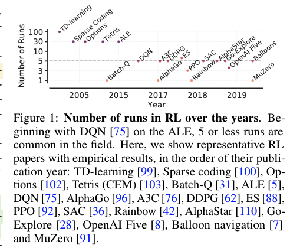
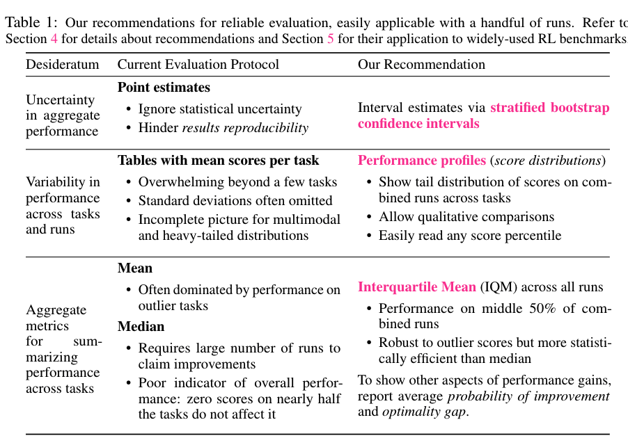

[TOC]
- Title: Deep Reinforcement Learning at the Edge of the Statistical Precipice
- Author: Rishabh Agarwal et. al.
- Publish Year: NeurIPS 2021
- Review Date: 3 Dec 2021
Summary of paper
This needs to be only 1-3 sentences, but it demonstrates that you understand the paper and, moreover, can summarize it more concisely than the author in his abstract.
Most current published results on deep RL benchmarks uses point estimate of aggregate performance such as mean and median score across the task.
The issue of this performance measurement is:
- since the benchmarks are computially demanding, one cannot run the evaluation process many times.
- the statistical uncertainty implied by the use of a finite number of training runs will “slow down progress in the field”
- only reporting point estimates obscure nuances in comparison and can erroneously lead the filed to conclude which methods are SOTA, ensuing wasted effort when applied in practice.

To address this deficiencies, the author presented more efficient and robust alternatives
- interquartile mean
- not easily affected by outlier
- reporting performance distribution across all runs (performance profiles)
- interval estimates via strtified bootstrap confidence intervals
Recommendation of reliable evaluation

Some key terms
point estimate
point estimate: In statistics, point estimation involves the use of sample data to calculate a single value which is to serve as a “best guess”
**bootstraping method **
https://www.youtube.com/watch?v=Xz0x-8-cgaQ instead of repeating the expensive experiments multiple times, we can do bootstrapping to evaluation the performance.
bootstrap dataset: sample the data from the original dataset with replacement (meaning you can pick one element twice)
optimality gap
optimality gap: the amount by which thealgorithm fails to meet a minimum score ofγ= 1.0
probability of improvement his metricshows how likely it is forXto outperformYon a randomly selected task.
Good things about the paper (one paragraph)
This is not always necessary, especially when the review is generally favorable. However, it is strongly recommended if the review is critical. Such introductions are good psychology if you want the author to drastically revise the paper.
clear
and the concern is serious
it presents a better way of RL method evaluation
Major comments
Discuss the author’s assumptions, technical approach, analysis, results, conclusions, reference, etc. Be constructive, if possible, by suggesting improvements.
This is not about discovery of new algorithm, but an appeal for better evaluation metric
Minor comments
This section contains comments on style, figures, grammar, etc. If any of these are especially poor and detract from the overall presentation, then they might escalate to the ‘major comments’ section. It is acceptable to write these comments in list (or bullet) form.
The team publish a open source evaluation library
https://github.com/google-research/rliable
Potential future work
List what you can improve from the work
We can use this evaluation method to evaluate future RL systems